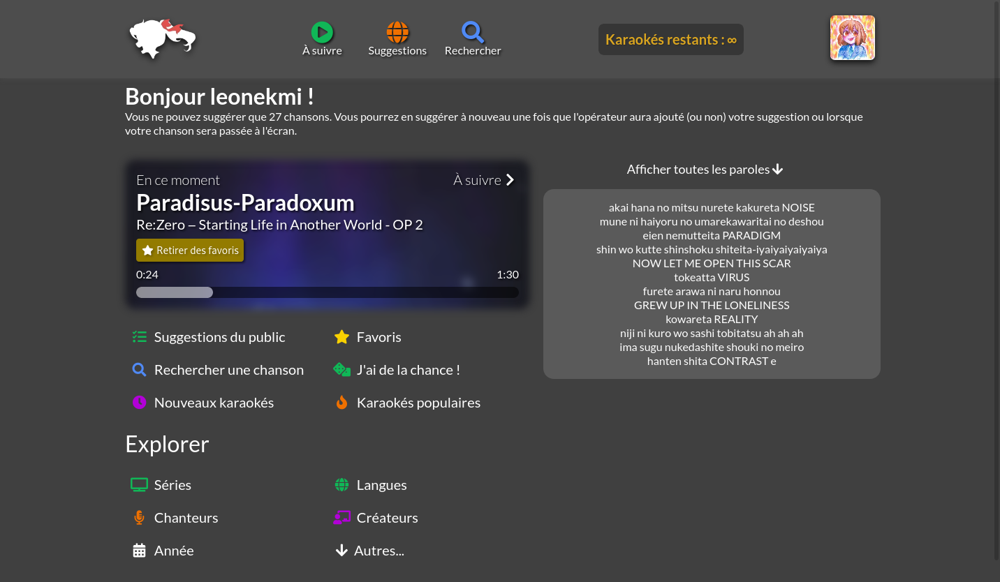
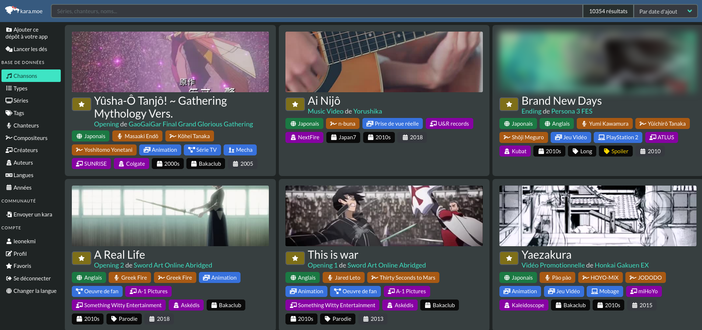
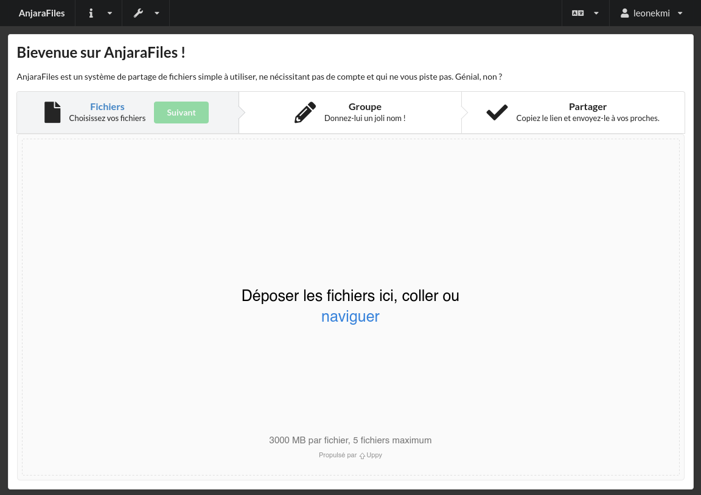
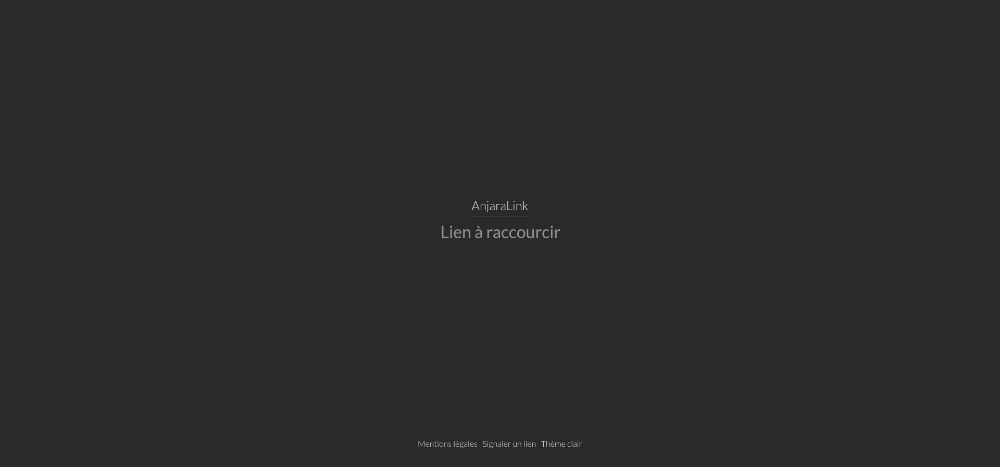

17 ans, Développeur/concepteur web. Nage dans la culture de la japanimation.
Prépare un Baccalauréat général spécialité Mathématiques / Numérique et Sciences Informatiques (spécialité SES en Première)
A décidé d'opter pour la classe Web et UI/UX dans le vaste monde de l'informatique.
Utilisateur aguerri d'Arch Linux sur bureau.
Langues : 🇬🇧 Anglais (B2), 🇵🇱 Polonais (A2+), 🇩🇪 Allemand (A1-A2)
Le karaoké infini
Karaoke Mugen est une suite d'outils open-source tournant autour du karaoké : il y a une base de données collaborative et des applications pour pouvoir organiser ou jouer les dits karaokés. C'est une application qui existe depuis 2017 et qui a été utilisée avec succès à de nombreuses conventions à thème pop culture (Jonetsu, Japan Expo, etc.).
J'ai découvert ce projet en mars 2020 et vite rejoint l'équipe de développement afin de pouvoir apporter mon aide. Le projet vit de ses nombreuses collaborations et d'une base très riche pour de nombreux goûts.
L'application Karaoke Mugen est pensée pour être utilisée dans des contextes évènementiels. Nous avons ainsi une interface publique pour permettre aux invités, avec leur smartphone, de suggérer des chansons et pour permettre à l'organisateur de récupérer les souhaits des utilisateurs. Dans le cycle de développement de la 5ème version majeure de l'application, l'idée de recréer une nouvelle interface publique, l'ancienne étant héritée des premières versions de l'application, avait commencée à être traitée. J'ai conçu une maquette avec Figma avec le soutien des autres développeurs. Le travail avait débuté en septembre 2020 pour des premiers résultats en novembre 2020, que nous avions publiés sur le blog de l'application. Avec les autres membres de l'équipe, nous avons donc implémenté cette interface avec le framework qui était déjà utilisé, React. La version est encore en travail mais est d'ores-et-déjà disponible dans une mouture expérimentale sur le site Internet de l'application.
Au-delà de l'application, il est possible de naviguer dans la base à travers le site Internet de la base. L'interface a été entièrement refaite durant l'été 2020 pour remplacer l'ancienne qui manquait de fonctionnalités. J'ai créé l'architecture de l'application qui est une application Nuxt.js universelle, en utilisant donc le framework Vue.js. En collaboration avec d'autres développeurs, j'ai également créé l'interface avec Bulma, elle est pensée pour afficher un maximum de détails tout en affichant un grand nombre de chansons.
Crédit de l'image d'illustration : © Sedeto 2021
Promouvoir et créer des logiciels libres
Anjara est une association loi 1901 établie en Île-de-France ayant pour but de promouvoir le logiciel libre à travers l'hébergement et le développement de ceux-ci. Créée en janvier 2019, nous sommes composés de 6 personnes poursuivant tous le même but : apprendre en servant à la fois une cause.
J'ai été dès le début de l'aventure et je suis trésorier de l'association depuis sa création. Nous avons des plans pour acheter et mettre en centre de données notre propre infrastructure serveur. En attendant, nous louons des serveurs chez des hébergeurs (Hetzner, Vultr, OVH) pour héberger nos projets.
J'ai créé de toutes pièces grâce à Laravel et Fomantic UI une solution de partage de fichiers nommée Raki, elle a pour but de rendre possible le partage de fichiers d'une façon simple, sans nécessiter de compte ni d'inscription. Le tout en permettant de garder ses fichiers pendant 1 an maximum, de les chiffrer avec un mot de passe, de les supprimer automatiquement ou manuellement tout ou partie des fichiers. Le code source est disponible sur GitHub.
Anjara propose un service de raccourcissement de liens simple à utiliser, là encore ne nécessitant aucun compte ni inscription. Toujours réalisé avec Laravel, j'ai décidé pour le coup de créer ma propre feuille de style CSS. L'interface qui en résulte est sobre et épurée.
Crédit de l'image d'illustration : © Volnix 2019-2021
Magazine lycéen Pop Culture
MangActu est un magazine lycéen débuté en 2019 au sein du Club Manga du lycée Louis Armand à Mulhouse. À la base une double page résumant les actualités, le MangActu a su se développer en un magazine mensuel de 20 pages distribués dans les librairies mulhousiennes, dont l'un des numéros est lauréat du prix académique Médiatiks Strasbourg. Malheuresement, des suites de la pandémie et suite à une charge de travail qui s'est avérée trop importante, spécialement pour les terminales, la publication en a été suspendue.
J'ai intégré l'équipe à la rentrée 2019 pour débuter en tant que rédacteur. Rapidement, j'ai su m'expérimenter avec la suite Adobe (InDesign, Photoshop) pour réaliser des maquettes et mettre en page une partie du magazine tous les mois. Également pour les besoins du magazine, j'ai su créé, là encore avec Laravel et Fomantic UI, le site Internet qui distribue le MangActu encore à ce jour.

L'ultime échappatoire
2014 : Netflix se lance en France, je n'avais alors que 11 ans et je venais à peine de commencer ma première année de collège. Muni de l'abonnement de mon père je me suis donc lancé sur la plateforme pour y trouver mon bonheur. À ce moment la plateforme n'avait qu'une liste restreinte de contenu disponible en France, cela ne m'a pas empêché de tomber sur Death Note, un thriller animé, adapté du manga de Tsugumi Ōba et Takeshi Obata. C'est donc ainsi le début d'une longue traversée dans ce qu'a pu produire le Japon depuis plus de 20 ans.
Crédit de l'image d'illustration : Brand New Animal © Netflix Worldwide Entertainment, TRIGGER 2020-2021
Créer, construire, jouer !
Évidemment qu'un jeune de mon genre a au moins mis la main une fois sur une manette, je ne surprendrais personne en le disant. Ma préférence est tournée vers les jeux de simulation et de puzzle. Là encore, retournons en arrière. 2013 : Minecraft prend son envol, YouTube s'enflamme et avec lui emporte nombre de vidéastes. Aypierre qui concluait la première saison de son Let's play mécanique, lançait la saison 2. À cette époque je n'avais qu'un simple PC portable pas très capable pour jouer. J'ai téléchargé et joué à Minecraft pour tenter de reproduire certains systèmes exposés par Aypierre. Au-delà, je me suis doté d'un compte Steam et j'ai acheté Portal 2, mon tout premier jeu, avec lui s'en suit une grande collection de jeux qui tendent à me divertir, bien que je n'ai plus le temps avec tout ce que je trouve à faire.
Crédit de l'image d'illustration : Portal 2 © Valve 2011-2021